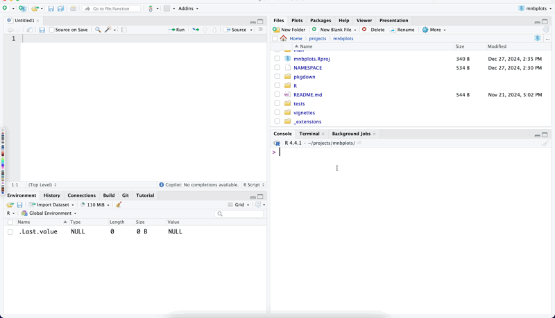
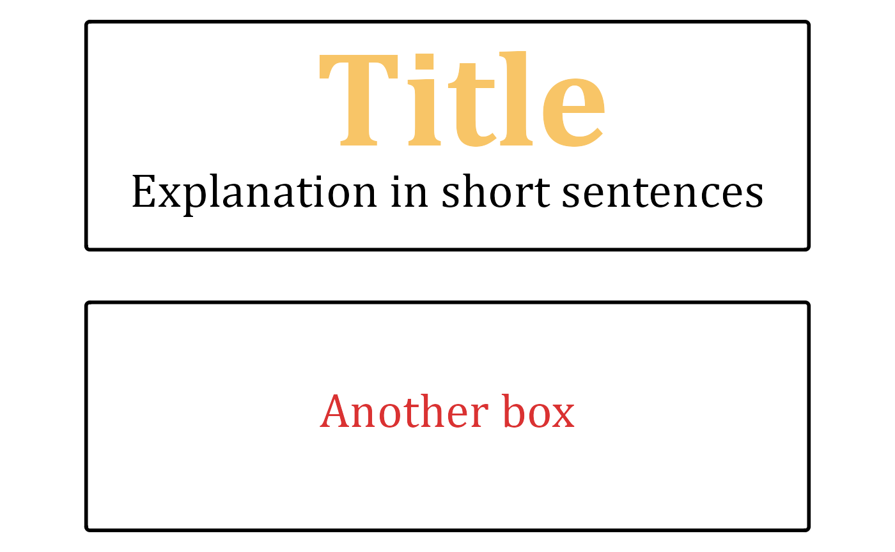

pptx
PPTX.RmdSlide template
The use_slide function in the mnbplots
package allows you to create PowerPoint slide templates using Quarto.
This function is designed to streamline the process of generating new
slide files from predefined templates, making it easier to maintain
consistency across your presentations.
To use the use_slide function, you need to specify the
filename for the new slide and the template you want to use. By default,
the filename is set to “slide” and the template is set to “mnb100”. You
can customize these parameters to fit your specific needs. For example,
you can create a new slide file named “presentation” using the
“custom_template” by calling
use_slide("presentation", "mnb100").

The function works by first checking if the specified template exists in the package’s template directory. If the template is available, it creates a new directory called “_extensions” (if it doesn’t already exist) and copies the template file into this directory. The new slide file is then created with the specified filename and the “.qmd” extension. Currently, mnb100 is the only available template!
If the template is not found, the function will abort and display an error message indicating that the template should be one of the available templates. This ensures that you are always using valid templates and helps prevent errors in your presentation creation process.
Overall, the use_slide function is a powerful tool for
anyone looking to create consistent and professional PowerPoint
presentations using Quarto and the mnbplots package. By
automating the template selection and file creation process, it saves
you time and effort, allowing you to focus on the content of your
slides.
Boxes
text_boxes(
chars = 30,
lines = 4,
size = 10,
"[yellow][80] **Title**[][]\nExplanation in short sentences",
"[red]Another box"
)
#> Warning: Duplicated aesthetics after name standardisation: colour, fill, hjust,
#> label.size, and text.colour
#> Warning: Duplicated aesthetics after name standardisation: colour, fill, and hjust
#> Duplicated aesthetics after name standardisation: colour, fill, and hjust